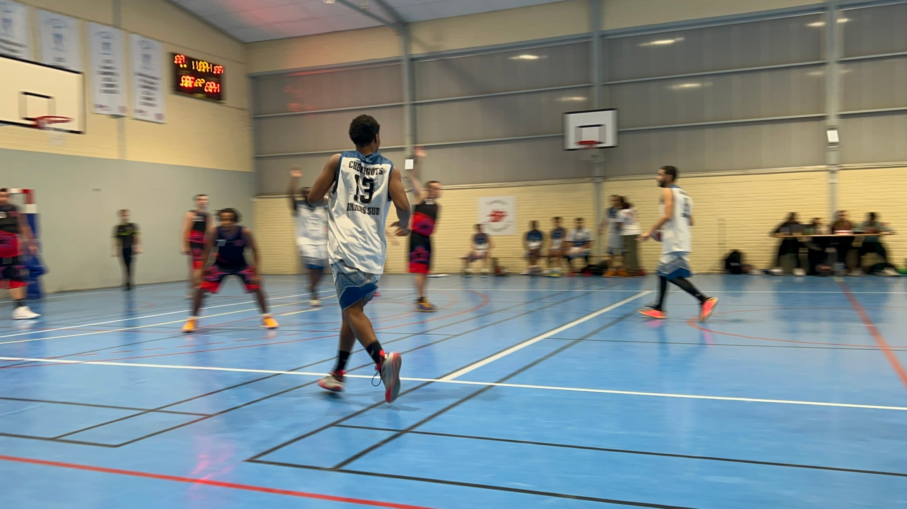
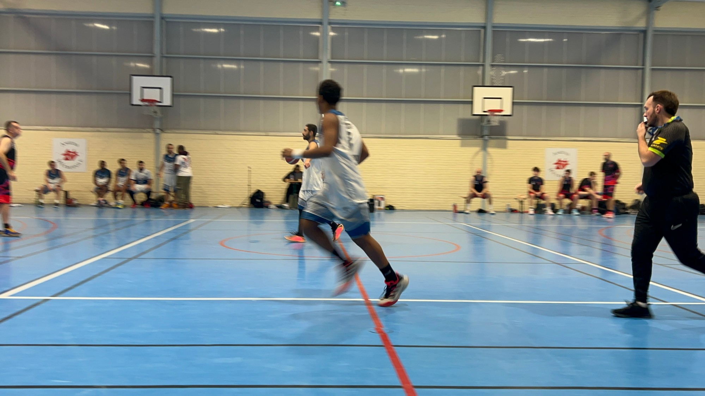
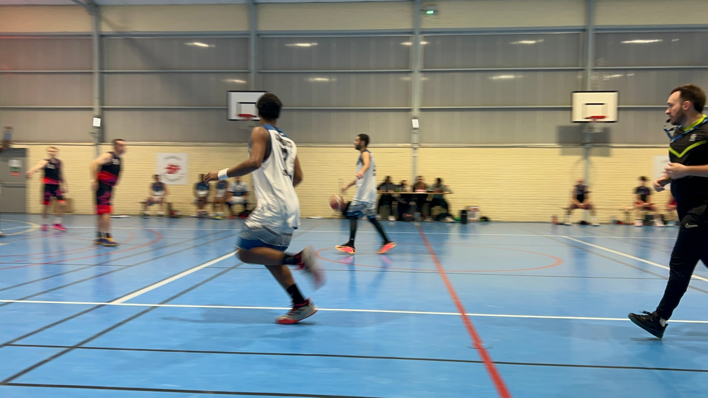
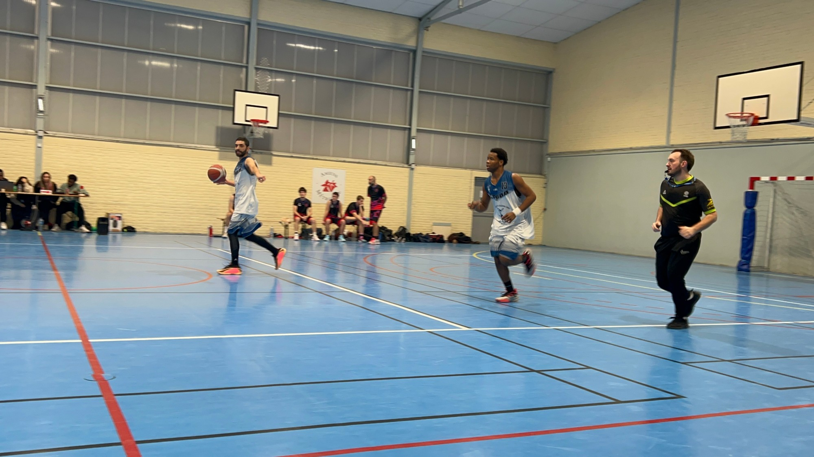
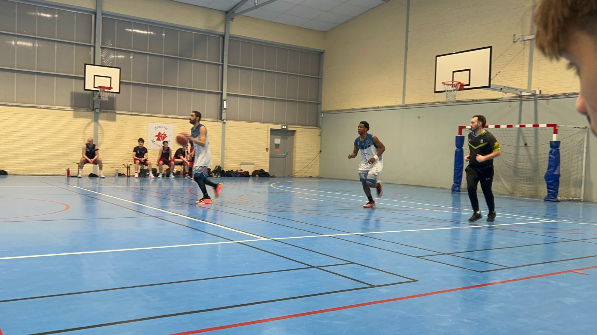
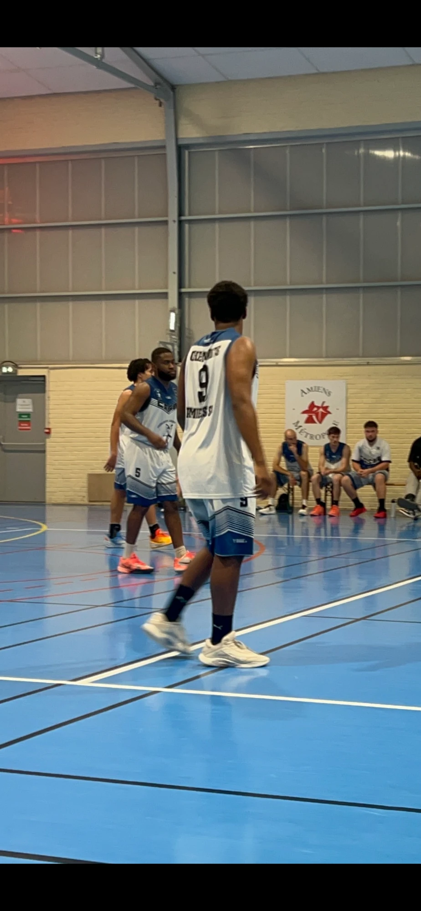

Galerie
Des photos de mes matchs avec le CASBB. Cliquez sur une photo pour la voir en grand.












Des photos de mes matchs avec le CASBB. Cliquez sur une photo pour la voir en grand.





